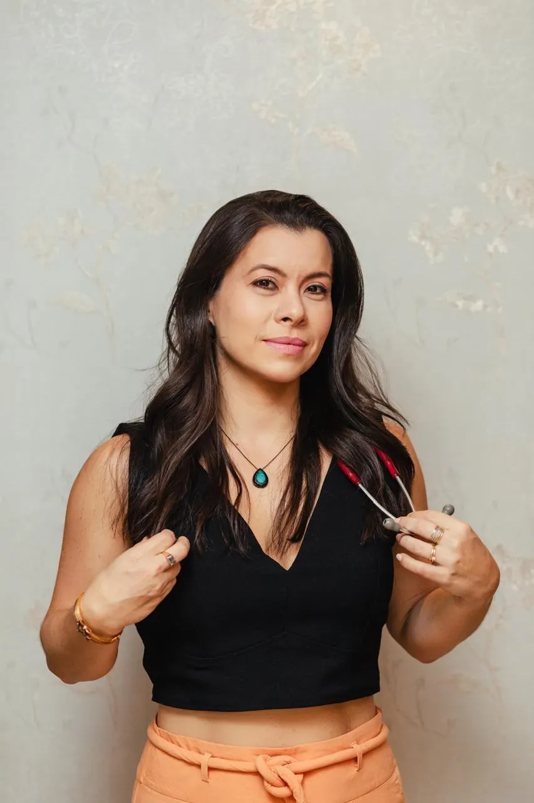
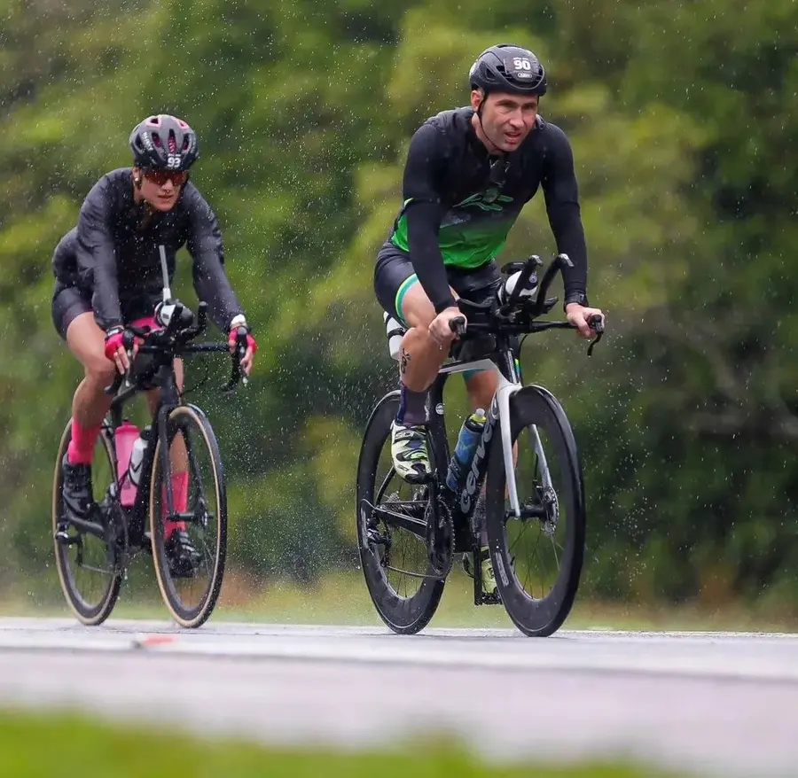
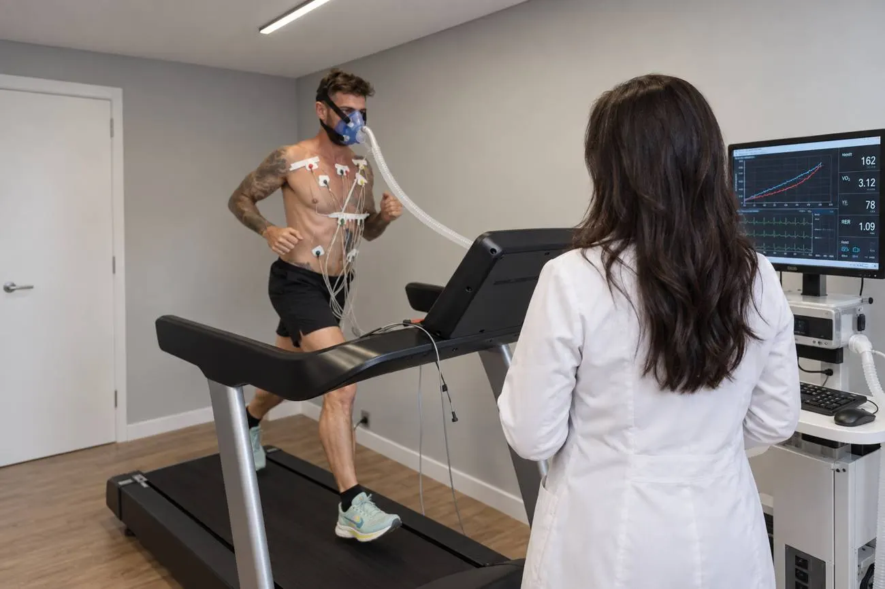
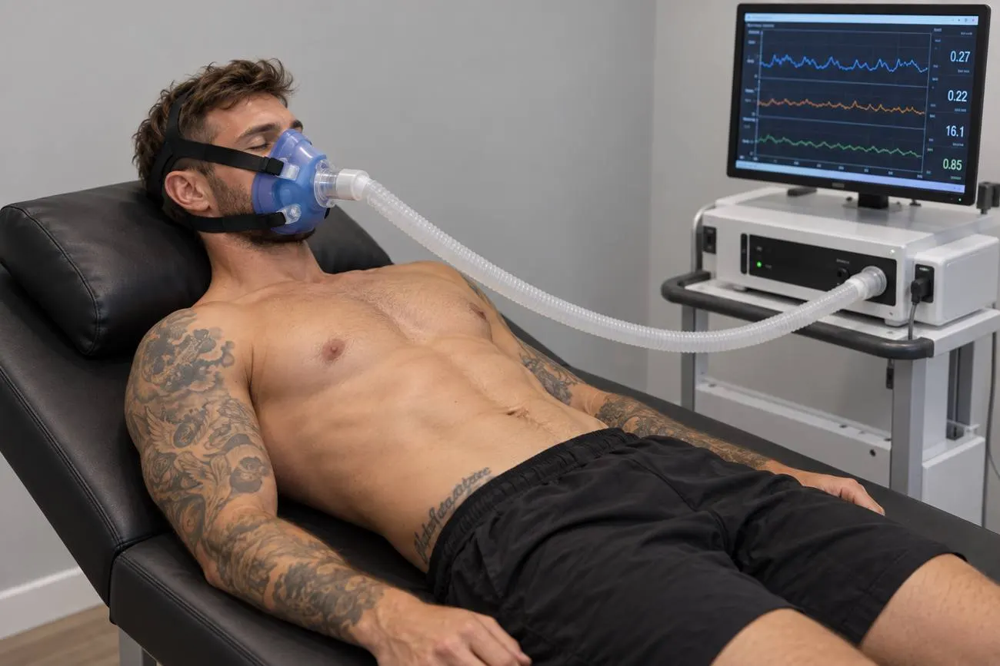
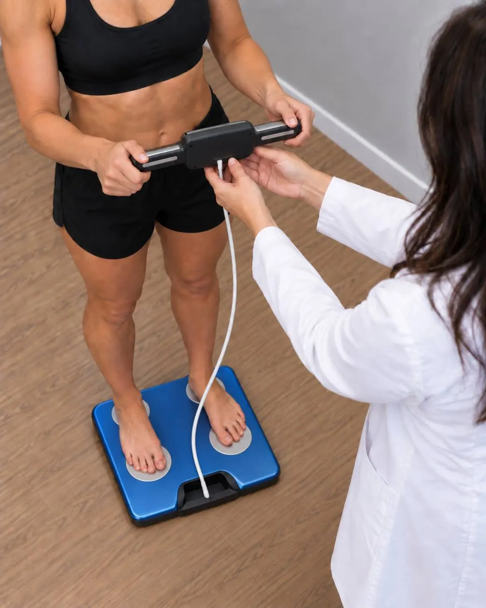
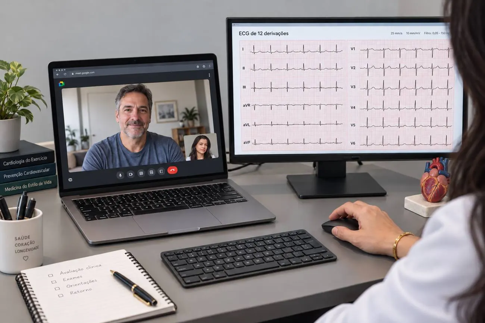
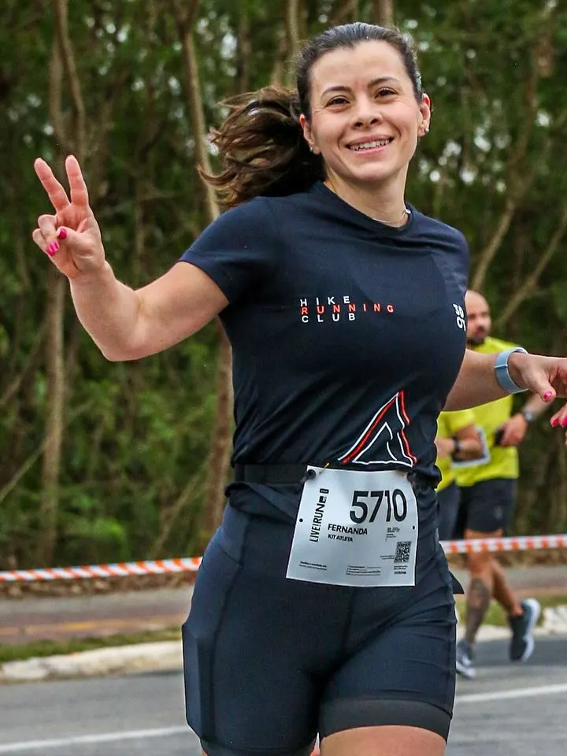
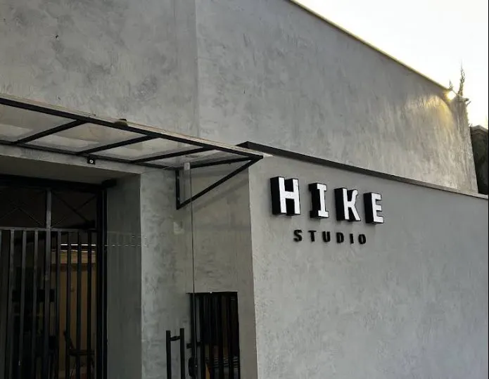

Treine com os números do seu corpo.
Avaliação completa em Medicina do Exercício e do Esporte para quem quer começar a se exercitar com segurança e para atletas que buscam desempenho. Metabolismo, coração e zonas de treino medidos em uma única consulta.
Dra. Fernanda Helena da Silva Vieira
CRM 145520/SP · RQE 104221 Medicina do Exercício e do Esporte
Para quem se exercita ou quer começar.
Você não precisa ser atleta. Precisa querer se mexer mais, entender seu corpo e treinar com orientação médica.

Quem vai começar
Saber se está tudo bem antes de iniciar e por onde começar com segurança.
Atletas amadores
Corrida, ciclismo, triathlon, Hyrox, musculação. Treinar na intensidade certa para evoluir.
Quem quer mudar hábitos
Atividade física e rotina ajustadas ao seu metabolismo, com metas que fazem sentido para você.
Não faço acompanhamento de doenças cardíacas, exceto quando estão relacionadas ao esporte. Nesses casos, o ideal é seguir com um cardiologista clínico.
Como funciona a avaliação completa.



Consulta clínica
Conversa sobre sua história, rotina, treino, sono e alimentação. Avaliação do corpo como um todo, com pedido de exames complementares quando necessário.
Bioimpedância
Composição corporal: massa muscular, gordura e água.
Eletrocardiograma
Avaliação do ritmo e da atividade elétrica do coração em repouso.
Calorimetria indireta
Mede quanta energia seu corpo gasta em repouso, a partir da respiração. Um número real do seu metabolismo, sem depender de fórmulas.
Teste de esforço cardiopulmonar
Na esteira, com máscara e monitoramento do coração. Mostra como seu corpo responde ao esforço e define suas zonas de treino.
Devolutiva
Explico cada resultado e o que muda no seu treino e nos seus hábitos a partir dele.
Com todos os exames, a avaliação leva de 1h30 a 2h.
O que você leva para casa.
Resultados que você entende e usa no treino da semana seguinte.
Como está seu metabolismo
Seu gasto de energia em repouso e o que ele indica.
Zonas de treinamento
As faixas de frequência cardíaca certas para você, calculadas no teste.
Gasto de energia em cada zona
Quanto você consome em cada faixa de frequência cardíaca.
Sugestões de melhoria
Orientações práticas para treino, rotina e hábitos.
Suas zonas de treino
Exemplo ilustrativo. Os valores reais saem do seu teste.
Cada zona vem com o gasto de energia correspondente.
Serviços.
Avaliação completa
Consulta e todos os exames no mesmo dia.
- Consulta médica completa
- Teste de esforço cardiopulmonar
- Calorimetria indireta
- Bioimpedância
- Eletrocardiograma

Também atendo online.
Para quem mora longe ou tem pouco tempo, a consulta pode ser feita por telemedicina.
- Consulta clínica e retornos por vídeo
- Análise de exames que você já tem
- Orientação de treino e hábitos

Dra. Fernanda Vieira
Médica formada em 2010, com formação em cardiologia e especialista em Medicina do Exercício e do Esporte. Olho para o paciente como um todo: coração, metabolismo, rotina e objetivo.
Médica do Exercício e do Esporte
Título pela SBMEE, Sociedade Brasileira de Medicina do Exercício e do Esporte. RQE 104221.
Pós-graduação em Ecocardiografia
Instituto Lilian Lopes
Residência em Cardiologia Pediátrica
Instituto Dante Pazzanese de Cardiologia
Residência em Pediatria
Hospital Santa Marcelina
Graduação em Medicina
Formada em 2010
Dúvidas frequentes.
Preciso ser atleta para fazer a avaliação?
Não. A maior parte dos pacientes são pessoas que querem começar a se exercitar ou que treinam por saúde. A avaliação mostra onde você está e como evoluir.
Quanto tempo dura a avaliação completa?
De 1h30 a 2h, com consulta e todos os exames no mesmo atendimento.
Você acompanha doenças do coração?
Não faço acompanhamento cardiológico de doenças cardíacas, exceto as relacionadas ao esporte. Se você já tem uma condição cardíaca em tratamento, siga com seu cardiologista.
Posso fazer só a consulta ou só um exame?
Pode. Consulta, teste de esforço cardiopulmonar e calorimetria indireta também são feitos separadamente.
A consulta online substitui os exames?
Não. Os exames são presenciais. Pela telemedicina, faço a consulta clínica, retornos e análise de exames que você já tem.
Onde atendo.
Hike StudioRua Fernão Dias, 196
São José dos Campos, SP Clique aqui para agendar
Dúvidas antes de agendar? contato@fernandavieira.med.br
